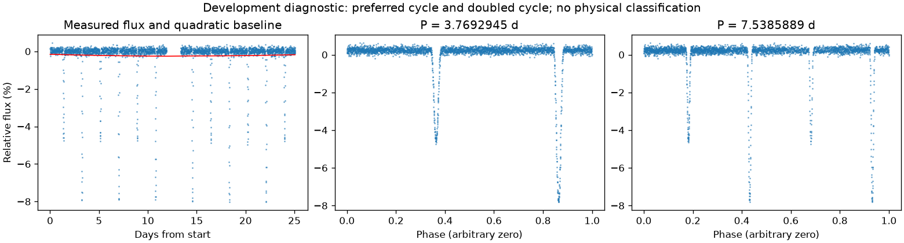
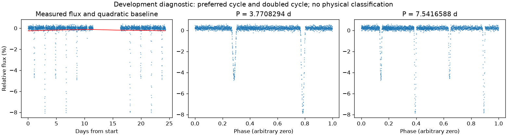

亮度重复，完整绕转周期有歧义
亮度重复周期约 3.77006192 天。仍保留完整绕转周期的歧义。
第二版周期：3.7692944528152257 天；状态：preferred_lightcurve_cycle。

左图红线是缓慢基线；右面两图去除该基线。若未通过周期要求，两图只展示得分最高的竞争解释。
| 竞争周期（天） | 交替周期预测改善 | 两组各自改善 | 通过初筛 |
|---|---|---|---|
| 3.7692945 | 96.2% | 96.1% / 96.3% | 是 |
| 1.8848991 | 75.3% | 57.6% / 81.8% | 是 |
| 1.2566824 | 26.9% | 25.1% / 28.4% | 是 |
| 0.6283412 | 19.1% | 9.2% / 22.8% | 否 |
| 0.3136746 | -45.7% | -7.4% / -1266.1% | 否 |
| 0.4712117 | -46.9% | -7.7% / -1068.4% | 否 |
| 0.9424495 | -116.6% | -3435.7% / -6.8% | 否 |
“预测改善”衡量用一组周期的形状预测另一组，比只有缓慢基线好多少；负数表示更差。搜索和预测共用了资料，因此这不是可信概率，也不是独立验证。
第二版周期：3.770829396371079 天；状态：preferred_lightcurve_cycle。

左图红线是缓慢基线；右面两图去除该基线。若未通过周期要求，两图只展示得分最高的竞争解释。
| 竞争周期（天） | 交替周期预测改善 | 两组各自改善 | 通过初筛 |
|---|---|---|---|
| 3.7708294 | 95.9% | 95.4% / 96.4% | 是 |
| 1.8851547 | 73.0% | 55.8% / 80.7% | 是 |
| 1.2567781 | 25.2% | 26.8% / 23.4% | 是 |
| 0.6284179 | 22.3% | 22.0% / 23.0% | 是 |
| 0.3136899 | -47.5% | -1337.6% / -7.1% | 否 |
| 0.4712423 | -51.2% | -7.4% / -1485.4% | 否 |
| 0.9424474 | -120.5% | -3800.6% / -6.8% | 否 |
“预测改善”衡量用一组周期的形状预测另一组，比只有缓慢基线好多少；负数表示更差。搜索和预测共用了资料，因此这不是可信概率，也不是独立验证。